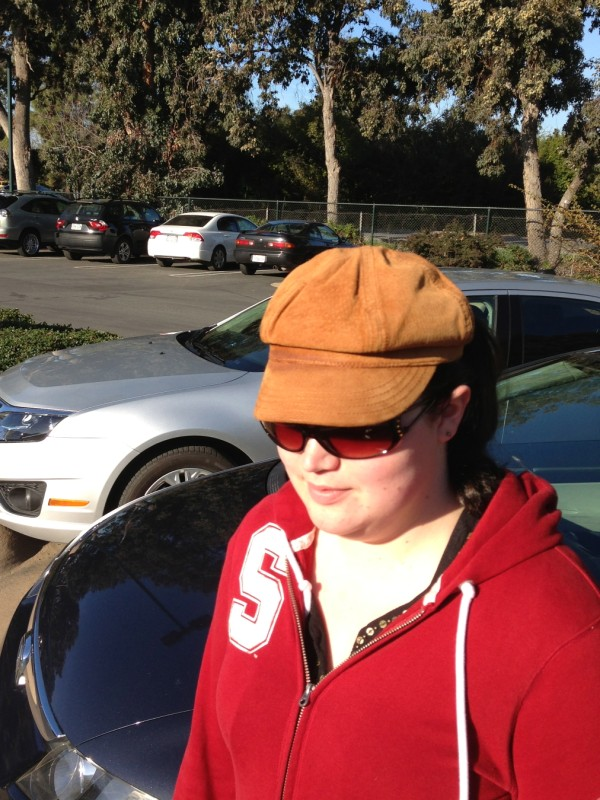

Lasik
Update
I needed glasses again in July 2018 because I re-developed myopia (near-sightedness). When I had my surgery, Dr. Manche and his technicians warned me that I might need glasses again if I had children. My son was a year old. I’m considering getting the surgery again, but I don’t want to go to the hospital for any reason right now. Dr. Manche’s office said that repeated the surgery costs half price.
Thursday, February 28, 2013
Lasik versus PRK
Getting surgery sucks. It sucks even more when you have to watch someone else heal faster.
PRK
Each surgery left me nearly blind for a day and unable to drive for a week. I was told I could go back to work the next day, and I could, I just couldn’t do anything while I was there. I’m a software engineer, so most days consist of reading reams of text from a computer screen. Instead, while at work, I spent most of my day in the office break room, playing pool and showing people that I could poke my finger through my “lens” on one side of my glasses.
Lasik
My fiance’s eye surgery, on the other hand, went much more smoothly. His blurriness cleared up by the end of the ride home, and his biggest inconvenience was sleeping with racquetball goggles for a week.
Lasik versus PRK
I’m saying “eye surgery” instead of “Lasik” because I didn’t get Lasik, I got PRK instead. Most people opt for PRK instead of Lasik because they don’t like the idea of a laser slicing their cornea like a ham on Christmas Day. I would have gladly chosen that option (and convinced my fiance to do so.) However, my cornea is too steep, making the slicing quirkier than my surgeon advised.
There are plenty of professionally written articles about the technical details of both eye surgeries as well as the differences between them. I think they do a much better job than I could, so I won’t bother to repeat them myself.
Dr. Manche
Dr. Manche has performed so many successful surgeries that Schwab donated a building to Stanford in his honor. He performed all four of our surgeries. I’m a difficult patient because I cry immediately, am very light-sensitive, and can’t move the fold of skin under my eyebrow (even when I think I am.) After my first surgery, the surgeon said “You weren’t the worst patient, but you made the top 5.” I agree that it was a difficult surgery, but, now, I’m glad it happened.
Jim in Racquetball Goggles
Just After Surgery
Follow-up The Next Day

After Two Weeks